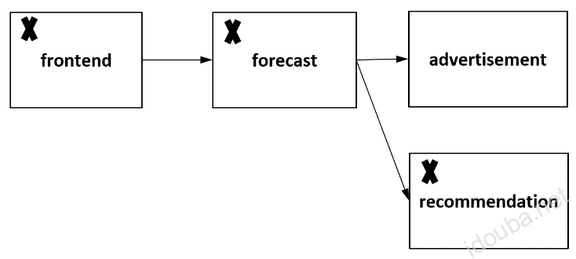
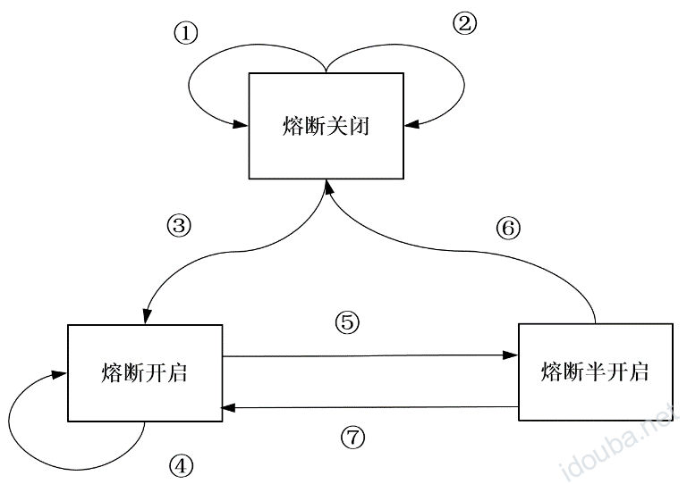
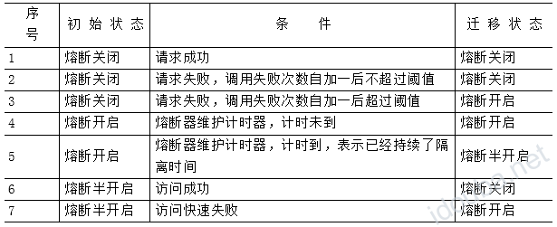
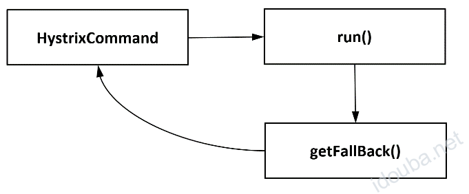
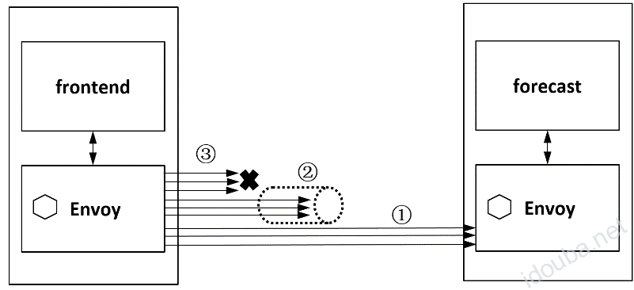
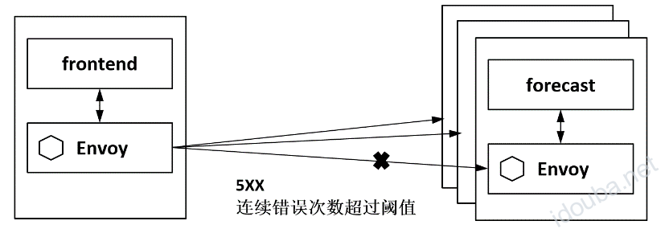
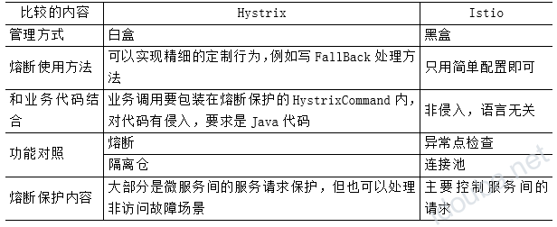

Istio服务熔断 –《云原生服务网格Istio》书摘01
本节书摘来自华为云原生技术丛书《云原生服务网格Istio:原理,实践,架构与源码解析》一书中的第3章非侵入的流量治理，第3节Istio流量治理的原理3.1.2小节服务熔断。更多内容参照原书，或者关注容器魔方公众号。
熔断器在生活中一般指可以自动操作的电气开关，用来保护电路不会因为电流过载或者短路而受损，典型的动作是在检测到故障后马上中断电流。“熔断器”这个概念延伸到计算机世界中指的是故障检测和处理逻辑，防止临时故障或意外导致系统整体不可用，最典型的应用场景是防止网络和服务调用故障级联发生，限制故障的影响范围，防止故障蔓延导致系统整体性能下降或雪崩。
如图3-6所示为级联故障示例，可以看出在4个服务间有调用关系，如果后端服务recommendation由于各种原因导致不可用，则前端服务forecast和frontend都会受影响。在这个过程中，若单个服务的故障蔓延到其他服务，就会影响整个系统的运行，所以需要让故障服务快速失败，让调用方服务forecast和frontend知道后端服务recommendation出现问题，并立即进行故障处理。这时，非常小概率发生的事情对整个系统的影响都足够大

图3-6 级联故障示例
在Hystrix官方曾经有这样一个推算：如果一个应用包含30个依赖的服务，每个服务都可以保证99.99%可靠性地正常运行，则从整个应用角度看，可以得到99.9930 =99.7%的正常运行时间，即有0.3%的失败率，在10亿次请求中就会有3 000 000多种失败，每个月就会有两个小时以上的宕机。即使其他服务都是运行良好的，只要其中一个服务有这样0.001%的故障几率，对整个系统就都会产生严重的影响。
关于熔断的设计，Martin Fowler有一个经典的文章，其中描述的熔断主要应用于微服务场景下的分布式调用中：在远程调用时，请求在超时前一直挂起，会导致请求链路上的级联故障和资源耗尽；熔断器封装了被保护的逻辑，监控调用是否失败，当连续调用失败的数量超过阈值时，熔断器就会跳闸，在跳闸后的一定时间段内，所有调用远程服务的尝试都将立即返回失败；同时，熔断器设置了一个计时器，当计时到期时，允许有限数量的测试请求通过；如果这些请求成功，则熔断器恢复正常操作；如果这些请求失败，则维持断路状态。Martin把这个简单的模型通过一个状态机来表达，我们简单理解下，如图3-7所示。

图3-7 熔断器状态机
图3-7上的三个点表示熔断器的状态，下面分别进行解释。
- 熔断关闭：熔断器处于关闭状态，服务可以访问。熔断器维护了访问失败的计数器，若服务访问失败则加一。
- 熔断开启：熔断器处于开启状态，服务不可访问，若有服务访问则立即出错。
- 熔断半开启：熔断器处于半开启状态，允许对服务尝试请求，若服务访问成功则说明故障已经得到解决，否则说明故障依然存在。
图上状态机上的几条边表示几种状态流转，如表3-1所示。

表3-1 熔断器的状态流转
Martin这个状态机成为后面很多系统实现的设计指导，包括最有名的Hystrix，当然，Istio的异常点检测也是按照类似语义工作的，后面会分别进行讲解。
1．Hystrix熔断
关于熔断，大家比较熟悉的一个落地产品就是Hystrix。Hystrix是Netflix提供的众多服务治理工具集中的一个，在形态上是一个Java库，在2011年出现，后来多在Spring Cloud中配合其他微服务治理工具集一起使用。
Hystrix的主要功能包括：
- 阻断级联失败，防止雪崩；
- 提供延迟和失败保护；
- 快速失败并即时恢复；
- 对每个服务调用都进行隔离；
- 对每个服务都维护一个连接池，在连接池满时直接拒绝访问；
- 配置熔断阈值，对服务访问直接走失败处理Fallback逻辑，可以定义失败处理逻辑；
- 在熔断生效后，在设定的时间后探测是否恢复，若恢复则关闭熔断；
- 提供实时监控、告警和操作控制。
Hystrix的熔断机制基本上与Martin的熔断机制一致。在实现上，如图3-8所示，Hystrix将要保护的过程封装在一个HystrixCommand中，将熔断功能应用到调用的方法上，并监视对该方法的失败调用，当失败次数达到阈值时，后续调用自动失败并被转到一个Fallback方法上。在HystrixCommand中封装的要保护的方法并不要求是一个对远端服务的请求，可以是任何需要保护的过程。每个HystrixCommand都可以被设置一个Fallback方法，用户可以写代码定义Fallback方法的处理逻辑。

图3-8 HystrixCommand熔断处理
在Hystrix的资源隔离方式中除了提供了熔断，还提供了对线程池的管理，减少和限制了单个服务故障对整个系统的影响，提高了整个系统的弹性。在使用上，不管是直接使用Netflix的工具集还是Spring Cloud中的包装，都建议在代码中写熔断处理逻辑，有针对性地进行处理，但侵入了业务代码，这也是与Istio比较大的差别。
业界一直以Hystrix作为熔断的实现模板，尤其是基于Spring Cloud。但遗憾的是，Hystrix在1.5.18版本后就停止开发和代码合入，转为维护状态，其替代者是不太知名的Resilience4J。
2．Istio熔断
云原生场景下的服务调用关系更加复杂，前文提到的若干问题也更加严峻，Istio提供了一套非侵入的熔断能力来应对这种挑战。
与Hystrix类似，在Istio中也提供了连接池和故障实例隔离的能力，只是概念术语稍有不同：前者在Istio的配置中叫作连接池管理，后者叫作异常点检测，分别对应Envoy的熔断和异常点检测。
Istio在0.8版本之前使用V1alpha1接口，其中专门有个CircuitBreaker配置，包含对连接池和故障实例隔离的全部配置。在Istio 1.1的V1alpha3接口中，CircuitBreaker功能被拆分成连接池管理（ConnectionPoolSettings）和异常点检查（OutlierDetection）这两种配置，由用户选择搭配使用。
首先看看解决的问题，如下所述。
- 在Istio中通过限制某个客户端对目标服务的连接数、访问请求数等，避免对一个服务的过量访问，如果超过配置的阈值，则快速断路请求。还会限制重试次数，避免重试次数过多导致系统压力变大并加剧故障的传播；
- 如果某个服务实例频繁超时或者出错，则将该实例隔离，避免影响整个服务。
以上两个应用场景正好对应连接池管理和异常实例隔离功能。
Istio的连接池管理工作机制对TCP提供了最大连接数、连接超时时间等管理方式，对HTTP提供了最大请求数、最大等待请求数、最大重试次数、每连接最大请求数等管理方式，它控制客户端对目标服务的连接和访问，在超过配置时快速拒绝。
如图3-9所示，通过Istio的连接池管理可以控制frontend服务对目标服务forecast的请求：
- 当frontend服务对目标服务forecast的请求不超过配置的最大连接数时，放行；
- 当frontend服务对目标服务forecast的请求不超过配置的最大等待请求数时，进入连接池等待；
- 当frontend服务对目标服务forecast的请求超过配置的最大等待请求数时，直接拒绝。

图3-9 Istio的连接池管理
Istio提供的异常点检查机制动态地将异常实例从负载均衡池中移除，如图3-10所示，当连续的错误数超过配置的阈值时，后端实例会被移除。异常点检查在实现上对每个上游服务都进行跟踪，对于HTTP服务，如果有主机返回了连续的5xx，则会被踢出服务池；而对于TCP服务，如果到目标服务的连接超时和失败，则都会被记为出错。

图3-10 Istio异常点检查
另外，被移除的实例在一段时间之后，还会被加回来再次尝试访问，如果可以访问成功，则认为实例正常；如果访问不成功，则实例不正常，重新被逐出，后面驱逐的时间等于一个基础时间乘以驱逐的次数。这样，如果一个实例经过以上过程的多次尝试访问一直不可用，则下次会被隔离更久的时间。可以看到，Istio的这个流程也是基于Martin的熔断模型设计和实现的，不同之处在于这里没有熔断半开状态，熔断器要打开多长时间取决于失败的次数。
另外，在Istio中可以控制驱逐比例，即有多少比例的服务实例在不满足要求时被驱逐。当有太多实例被移除时，就会进入恐慌模式，这时会忽略负载均衡池上实例的健康标记，仍然会向所有实例发送请求，从而保证一个服务的整体可用性。
下面对Istio与Hystrix的熔断进行简单对比，如表3-2所示。可以看到与Hystrix相比，Istio实现的熔断器其实是一个黑盒，和业务没有耦合，不涉及代码，只要是对服务访问的保护就可以用，配置比较简单、直接。

表3-2 Istio和Hystrix熔断的简单对比
熔断功能本来就是叠加上去的服务保护，并不能完全替代代码中的异常处理。业务代码本来也应该做好各种异常处理，在发生异常的时候通知调用方的代码或者最终用户，如下所示：
public void callService(String serviceName) throws Exception {
try {
// call remote service
RestTemplate restTemplate = new RestTemplate();
String result = restTemplate.getForObject(serviceName, String.class);
} catch (Exception e) {
// exception handle
dealException(e)
}
}
Istio的熔断能力是对业务透明的，不影响也不关心业务代码的写法。当Hystrix开发的服务运行在Istio环境时，两种熔断机制叠加在一起。在故障场景下，如果Hystrix和Istio两种规则同时存在，则严格的规则先生效。当然，不推荐采用这种做法，建议业务代码处理好业务，把治理的事情交给Istio来做。